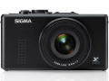

器材库 > 不可换镜头数码相机 > DP1x

规格总览
发布日期
2010-02-22
影像规格
影像传感器
Foveon X3
影像传感器尺寸
20.7×13.8mm
有效像素
1406万
影像处理器
“TRUE”真像图像处理引擎
静态图像尺寸
2640 × 1760 ; 2640×1760 ; 1872 x 1248 ; 1312 x 880
静态图像格式
JPEG, RAW
画幅比
3:2
短片尺寸
320×240@30fps
短片格式
AVI
镜头和对焦
镜头结构
6片/5组
焦距
16.6mm
等效35mm画幅焦距
28mm
最大光圈
f/4
数码变焦
3倍
最近对焦距离
50cm, 微距30cm
自动对焦系统
相比检测系统
对焦模式
AF / MF
AF辅助灯
有
手动对焦
支持
曝光控制
测光模式
中央重点测光, 多分区评价测光, 点测光
曝光模式
P（程序自动曝光）, A（光圈优先自动曝光）, S（快门速度优先自动曝光）, M（手动测光曝光）
快门速度
1/2000秒 - 15秒
曝光补偿
±3EV以1/3EV级调整
自动包围曝光
正常、过曝、欠曝，以1/3EV级增至±3EV曝光
ISO感光度
50, 100, 200, 400, 800, 1600, 3200
白平衡
日光, 白炽灯, 闪光灯, 阴天, 自定义, 阴影, 自动, 钨丝灯
自拍
10秒, 2秒
连拍
每秒3张
闪光灯
内置闪光灯
固定
闪光模式
自动, 慢速同步, 减轻/消除红眼
闪光涵盖范围
30cm - 3m （ISO 自动）
取景规格
LCD类型
彩色TFT LCD
LCD尺寸
2.5英寸
LCD像素
23万
文件输入/输出
存储卡
SD/SDHC
数据接口
USB2.0
视频/音频接口
AV 输出
电源
电池
锂离子电池BP-31
外观
颜色
黑色
尺寸
113.3 x 59.5 x 56.1mm
重量
250g
hosen1682015-01-09 20:134.75 分
操作性 4.50功能性 4.50美观性 5.00趣味性 4.50耐用性 4.50性价比 5.00解像力 5.00色彩还原 5.00
arondes2014-06-10 06:124.06 分
操作性 4.50功能性 3.00美观性 4.00趣味性 4.00耐用性 4.00性价比 4.50解像力 4.50色彩还原 4.00
manumotive2013-12-14 12:453.75 分
操作性 3.50功能性 3.50美观性 4.00趣味性 3.50耐用性 3.00性价比 4.00解像力 5.00色彩还原 3.50
oldzzy2013-11-18 16:203.94 分
操作性 4.00功能性 3.50美观性 4.50趣味性 4.50耐用性 3.00性价比 4.00解像力 5.00色彩还原 3.00
wywmn2011-08-22 11:504.25 分
操作性 4.00功能性 4.00美观性 4.00趣味性 3.50耐用性 3.50性价比 5.00解像力 5.00色彩还原 5.00
产品图 / 样片
适马 DP1x
评测 / 相关文章
- 详细内容 （存档）
- 延续传统 适马DP1x评测 （存档）
- ［资讯］DIY适马DP系列手柄 （存档）
- ［资讯］适马发布DP1x、DP2x最新固件 （存档）
- ［资讯］适马DP1x固件升级：v1.01 （存档）
- ［试用］适马DP1x海外试片 （存档）
- ［资讯］适马DP1x即将开售 （存档）
- ［资讯］PMA2010 适马推出多款新品 （存档）
相关文章
- ［资讯］DIY适马DP系列手柄 （存档）
- ［资讯］适马发布DP1x、DP2x最新固件 （存档）
- ［资讯］适马DP1x固件升级：v1.01 （存档）
- ［试用］适马DP1x海外试片 （存档）
- ［资讯］适马DP1x即将开售 （存档）
- ［资讯］PMA2010 适马推出多款新品 （存档）
- ［资讯］适马DP1x （存档）